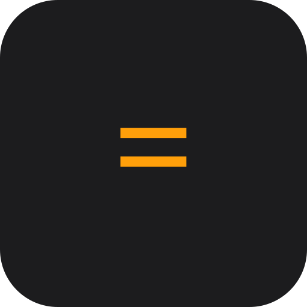

Command line
One-shot expressions and an interactive REPL with saved functions, scripts, and settings.
Downloads

CalcA programmable, scriptable calculator
One calculation engine, four ways to use it. Type expressions, save functions and scripts, graph your results, and keep everything across sessions — in any of six languages.
One-shot expressions and an interactive REPL with saved functions, scripts, and settings.
Downloads
A full-screen terminal app with persistent history, saved functions, and ASCII graphing.
Downloads
A native window around the same engine — installs like a regular application.
Downloads
Runs in your browser, is installable, and works fully offline after the first visit.
Get it
Works fully offline once loaded — install it from your browser's menu.